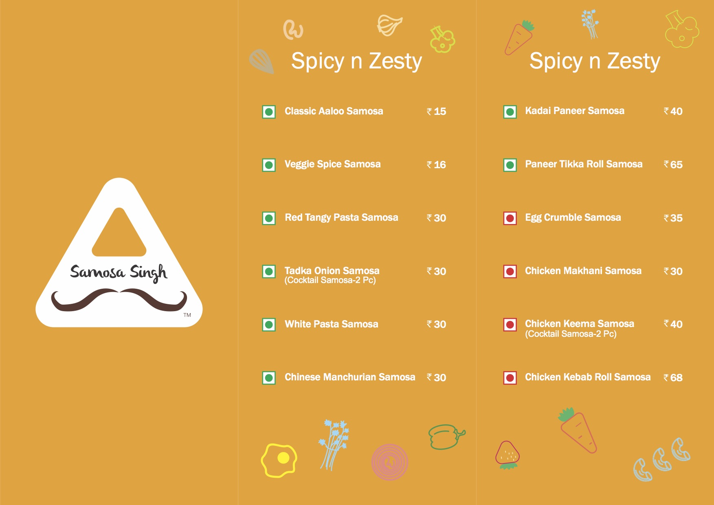

Samosa Singh
Who says only aaloo goes into a samosa! Experience the change at Samosa Singh
Samosa Singh was started in Feb 2016, with an objective of reinventing the king of Indian snacks--our very own humble samosa and present it to the customers in very different and innovative way.
We offer convergence of varieties with regional preferences at one place in a hygienic, fresh and exciting manner!!

Samosa Story, How Samosa’s came to India?
Visit our outlets in Bangalore to Experience the change!
Samosa Singh 16th A cross, Neeladari nagar Electronic city phase 1 Bangalore-560100
Samosa Singh Gopalan multiplex, Arcade Mall Mysore Road, RR Nagar Bangalore-560039
Samosa Singh PVR Cinemas, Phoenix Market City Whitefield Main Road, Mahadevpura Bengaluru- 560048
Samosa Singh Orion mall near PVR cinemas Brigade Gateway, Malleshwaram West Bengaluru- 560055
Menu
"So, this is a joint worth reordering from and revisiting. They offer such a simple preparation with so many variations and twists that will surely excite you."
-The Foodie Land Blog"All variety of samosa are very delicious and interesting. We are equally impressed with the Burger, Wrap and Chat. All food items kept on increasing the curiosity and made it more and more interesting."
-The Hee Bee